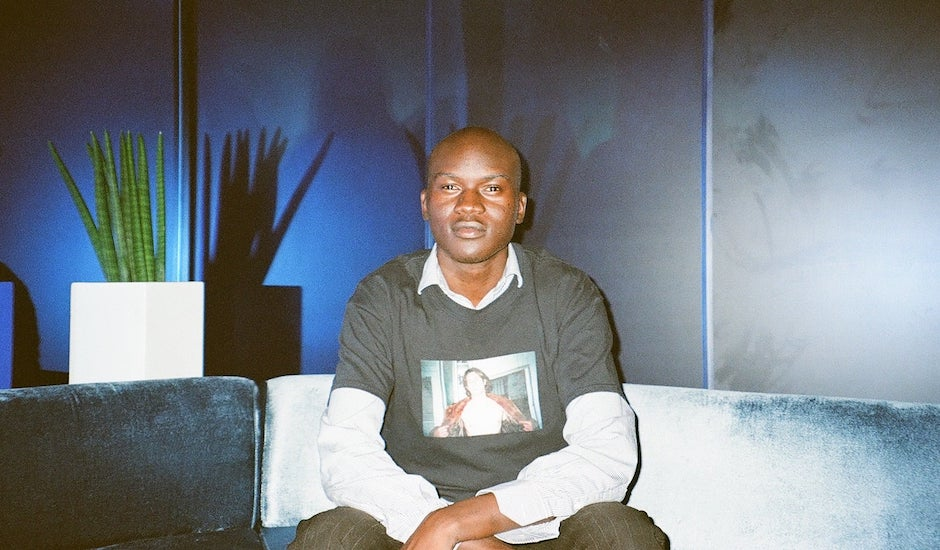

Skin On Skin, originario del Sud Sudan, cresciuto in Australia e attualmente residente in Francia, ha saputo coniugare con naturalezza la house e la techno pronte per il club con l’hip hop underground e alternativo, spaziando dal rap di Memphis al drill.
tato di una notevole abilità produttiva e di un orecchio affinato per i ganci vocali irresistibili, il suo stile richiama le radici crude e potenti della musica house: bassi profondi e ritmi incisivi. Si presenterà al Sónar 2024 con una reputazione consolidata per i suoi DJ set energici e vibranti, arricchiti da tracce inedite e remix personalizzati.
